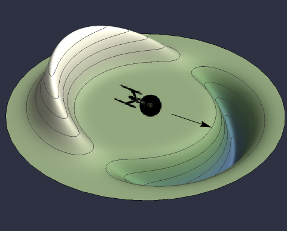
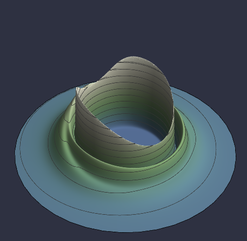

Black holes and their immense beauty
Learn more about black holes and how the darkest things in the universe are simultaneously the brightest.
Cross the Event HorizonOur only hope
The best way to understand the universes unimaginable immensity is to do a little thought experiment. Imagine you're standing in downtown London holding a small sowing pin and imagine you shrunk the entire universe such that the earth was the size of the head of the sowing pin (about 2 mm). You suddenly have the urge to travel to the solar systems nearest stellar neighbor, the Alpha Centauri system. In this miniaturized universe, this is equivalent to walking from downtown London all the way to Chicago, Illinois. In other words, if the earth were the size of the head of a pin, the Alpha Centauri system would be 6385 km away!
But thats not the worst of it. After all, humanity has built rockets, space probes and we've even landed on other planets. The fastest man-made object, the Parker Space Probe, zipped through space at a top speed of 635,266 km/h. How fast would this be in our miniaturized universe? A mere 0.02 mm/s. Imagine walking from Vancouver, Canada to the border of Colombia at a speed of 0.02 mm/s. It would take you over 7 centuries to get there. Thats how long it would take to travel to the solar systems nearest stellar neighbor using the fastest man-made object.
And this is only our nearest neighbor. Forget about the rest of the galaxy, let alone the entire universe. Rocket technology is not going to cut it for interstellar travel. We need something much, much faster.
Technically, humanity could send so-called 'generation ships' which, as the name suggests, sends a crew to a stellar system and whose decendents are the ones who arrive there. However, this comes with a number of issues, including
Humanity could also launch 'seed' missions, where instead of sending living humans out to space, we send a huge amount of embryos or eggs along with their nutrients and related automatic machinery for the artifical insemination. This one is even less tantilizing than the generation ships because we won't be the ones who will be traveling through space (though some might find that a positive). Additionally, there could be all sorts of issues including breakdown of the machinery, deterioration of the embryos/eggs and nutrients, and of course lack of personnel to maintain the ship.
A third option would be to sending a swarm of robots to do the exploration for use and report back their findings. However, this would be the least desirable since no humans would actually be exploring the universe!
How then can we surpass the problem of distance and time? The most obvious answer is: to get there faster. But nature has a fundamental speed limit - the speed of light. This is an unavoidable property of spacetime. Nothing can travel through spacetime faster than light. But what if instead of moving through spacetime, we move spacetime itself? This is a deeply complicated question, but one that has profound implications. A very simple solution of the Einstein equations, the equations describing what we call gravity, is called the Alcubierre solution. Founded by Miguel Alcubierre in 1994, it describes a small region of space which moves at any concievable speed, including, according to outside observers, faster than light!
 The intuition for the solution is quite simple and is described intuitively by a simple quantity called the expansion. A spaceship generates a matter field all around it such that spacetime takes the shape described by the Alcubierre solution. Behind the spaceship, the solution says that spacetime is expanding. In front of the ship, it says that spacetime is contracting. These two effects combine precisely in such a way that the region of spacetime containing the ship is moving forward, dragging the ship with it. Because spacetime itself is the thing that is 'moving', it drags the ship along at any speed!
The Alcubierre solution is a remarkably simple solution that describes a profoundly new idea: Use spacetime itself to push us along through the universe. It also represents an entirely new concept which goes by the name of metric engineering. Humans have so far understood that matter tells spacetime how to curve and spacetime tells matter how to move (a famous quote by a legendary physicist). But the concept of metric engineering means, instead of placing some matter in spacetime and determining what shape spacetime takes, we desire a particular shape of spacetime and through the Einstein equations we determine which matter content will produce this shape. Humans quite literally become the architects of spacetime.
However, there's a catch. It just so happens that when you input the Alcubierre spacetime into the Einstein equations, it will tell you the matter content must have negative energy! Moreover, it requires more negative energy than there is energy in the entire universe! This spells disaster for everyday physics. Negative energy makes no sense. E = mc^2 tell us (also an equation first written down by Einstein and deeply related to General Relativity) that there is a fundamental energy intrinsic to all particles and that this energy is never negative. So what does it mean that the Alcubierre solution requires negative energy? It means this solution just isn't physical (a caveat: It actually turns out that quantum field theory allows and even predicts negative energies, but these energies are typically either miniscule compared to the amount needed to bend spacetime or woefully out of reach of humanity).
There have been attempts by many to either circumvent the negative energy requirements or at the very least alleviate them. Some have changed the shape of the Alcubierre warp drive, some have appealed to different mathematical structures besides the expansion. A previous colleague of mine even claimed to have found a positive energy solution using a unique geometrical configuration, though this claim has recently been called into question. So far, no one has been able to solve the problem of negative energies.
 How then can we write down a solution of the Einstein equations that describe a physically meaningful warp drive? We need to go beyond the naive examples of Alcubierre. This is no simple task and requires tremendously complicated mathematical calculations, however within a simple generalization of the Alcubierre solution is a curiously simple geometric structure hidden within the equations for the warp drive. I discovered this geometric structure a couple years ago in my M.Sc thesis and published it here. The expansion of spacetime for one of my solutions is shown to the right. This solution is considerably more complicated than Alcubierres, showcasing the complexity of the problem of warp drives. The idea is not too complicated but represents a large step forward in the understanding of warp drives. This was by no means a complete solution to the negative energy problem, however it provides a shimmer of hope in the otherwise dark future of humanity's isolation.
There is ongoing research today on warp drives, though not nearly as much as other big research collaborations. Warp drives will be crucial in the future explorations by humanity of the cosmos. There is a bright future for this research and it is only in its infancy, despite being 30 years old. There is much that can be learned about how humans can become the architects of space and time.
Learn more about black holes and how the darkest things in the universe are simultaneously the brightest.
Cross the Event Horizon
See how gravity is fundamentally different from all other forces and why thats a huge problem in physics.
Pull me in